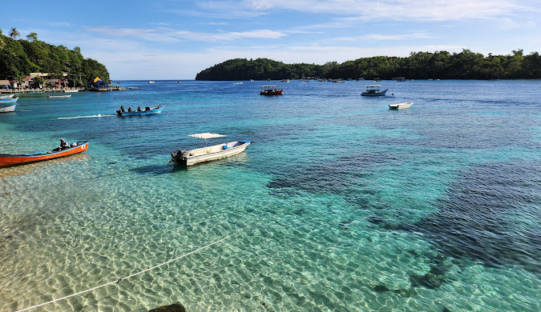
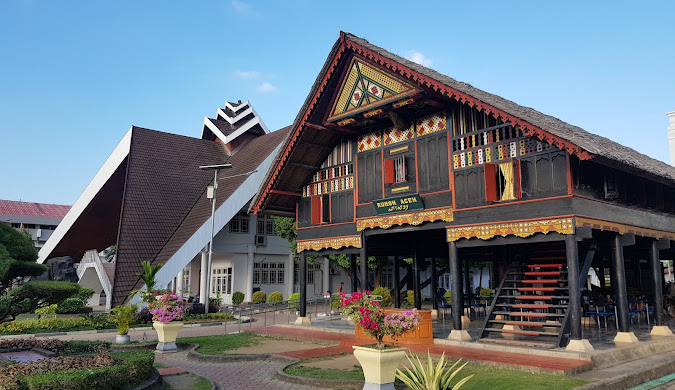
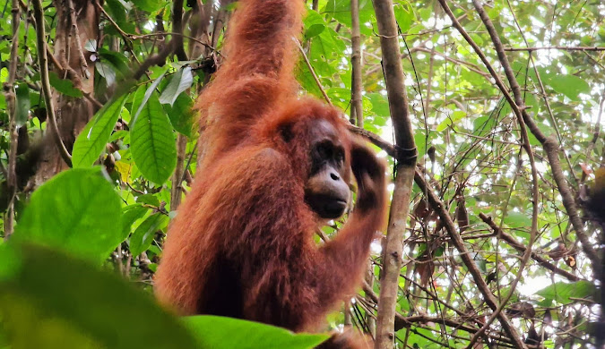

Platform analisis kemiskinan interaktif berbasis K-Means Clustering untuk 23 kabupaten/kota di Provinsi Aceh, periode 2015–2025. Dirancang untuk mendukung pengambilan keputusan kebijakan yang berbasis bukti.



Kemiskinan bersifat dinamis dan dipengaruhi oleh berbagai faktor sosial-ekonomi. Dashboard ini tidak hanya menampilkan kondisi saat ini, tetapi juga mengidentifikasi risiko melalui segmentasi wilayah ke dalam 3 level risiko. Dengan demikian, dashboard ini membantu pengambil kebijakan dalam menentukan prioritas intervensi secara lebih tepat dan berbasis data.
Lima section analisis yang saling terintegrasi, dilengkapi filter global aktif dan insight otomatis berbasis data di setiap visualisasi.
Hasil K-Means Clustering berbasis 5 indikator, dijalankan per tahun untuk mencerminkan dinamika perubahan kondisi wilayah dari waktu ke waktu. Label zona konsisten antar tahun berdasarkan urutan rata-rata kemiskinan centroid.
Dashboard dirancang dengan alur yang intuitif — dari gambaran besar hingga rekomendasi kebijakan spesifik per wilayah. Tidak perlu instalasi, cukup buka di browser.
Aspek-aspek berikut menjadi dasar klaim orisinalitas dalam pengajuan Hak Kekayaan Intelektual (HKI) atas karya cipta program komputer ini.
Seluruh data bersumber dari publikasi resmi BPS Provinsi Aceh, mencakup periode 2015–2025 untuk 23 kabupaten/kota dan satu baris data agregat Provinsi Aceh.
| Variabel | Satuan | Peran dalam analisis | Sumber BPS |
|---|---|---|---|
| Persentase Penduduk Miskin | % | Variabel dependen & fitur clustering | Publikasi Kemiskinan |
| Indeks Pembangunan Manusia (IPM) | Indeks 0–100 | Prediktor & fitur clustering | Publikasi IPM |
| Tingkat Pengangguran Terbuka (TPT) | % | Prediktor & fitur clustering | Sakernas |
| PDRB Atas Dasar Harga Konstan (ADHK) | Miliar Rp | Prediktor & fitur clustering | Neraca Regional |
| Laju Pertumbuhan PDRB | % | Prediktor & fitur clustering | Neraca Regional |
Dirancang untuk memenuhi kebutuhan berbagai pemangku kepentingan dalam ekosistem perencanaan dan kebijakan pembangunan daerah di Provinsi Aceh.
Akses langsung dashboard analitik interaktif. Tidak perlu instalasi — cukup buka di browser dan mulai eksplorasi.
Masuk ke Dashboard